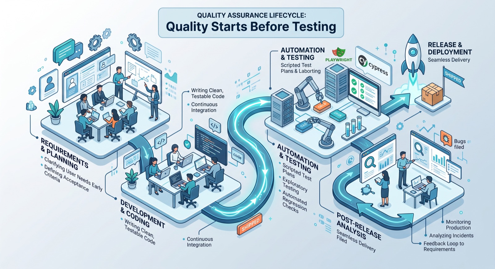

Quality Starts Before the First Line of Code: How I Approach QA
Why QA that begins at requirements, blends testing types, and closes the loop after release builds real product quality.
Most people picture QA as the stage right before a release: someone clicks through a build, checks a few boxes, and signs off. In practice, the highest-leverage part of the job happens much earlier, and it has almost nothing to do with clicking anything. Quality is decided in the requirements conversation, sustained through a mix of testing approaches during development, protected by automation where it matters most, and closed out with an honest look at what still got past everyone. Here's how I actually work through that cycle.

Getting involved before a line of code exists
I try to be in the room when requirements are still being shaped, not after they've been handed off as a finished spec. That's the point where ambiguity is cheapest to fix. A requirement that says "the user should be notified" can mean an email, a push notification, an in-app banner, or all three, and if that isn't nailed down before development starts, someone builds one interpretation, QA tests against another, and the resulting bug report is really just a miscommunication wearing a ticket number.
Getting involved early means asking the boring but necessary questions: what exactly counts as done, what are the acceptance criteria, what happens on the edge cases nobody mentioned (empty states, expired sessions, a second device, a slow network), and what's the actual risk if this specific piece breaks. A short conversation at this stage — five minutes on a call, a comment thread on a ticket — routinely prevents a rebuild two weeks later.
My time in the True North program shaped how I think about this. The lesson that stuck with me is to keep coming back to the person who'll actually use the product, not the ticket describing them. A requirement can be technically complete and still miss what matters to a real user — the flow that's used constantly versus the one used once a year, the error message that needs to make sense to someone who isn't an engineer. Keeping that person in view while requirements are still being written changes which edge cases get flagged as worth handling and which get reasonably deprioritized.
Combining testing types during development
Once development starts, no single testing approach covers what's actually needed, so I run several in parallel. For new features, I write test plans and test cases that map to the acceptance criteria agreed on earlier — this is what turns "we discussed this" into something the whole team can check against later. Functional testing confirms the feature does what it's supposed to; integration testing checks that it doesn't quietly break the systems around it; regression testing makes sure yesterday's fix didn't reopen last month's bug.
Scripted testing, though, only finds what it was written to look for. That's where exploratory testing earns its place — sitting down with a feature and deliberately trying to break it in ways a test case never anticipated: switching accounts mid-flow, going back and forward through browser history, submitting a form twice in quick succession, resizing a window at the wrong moment. These aren't edge cases anyone would think to script in advance, but they're exactly the kind of thing real users stumble into by accident, and exploratory sessions are where they usually surface first.
Where automation earns its keep
I automate the flows that are both critical and repetitive — checkout, login, core data submission, anything the team touches on nearly every change — using Cypress and Playwright. The goal isn't to automate everything; it's to automate the paths where a regression would be expensive and where running the same check by hand, over and over, adds no new information. A login test that passed yesterday and passes again today after a routing change isn't teaching anyone anything new by being run manually — it's just confirming nothing broke, and a script can confirm that faster and more reliably than a person clicking through it for the fifteenth time.
// Example: a Playwright smoke check for a critical flow,
// run on every pull request before deeper manual testing begins
test('user can complete checkout with a saved card', async ({ page }) => {
await page.goto('/cart');
await page.getByRole('button', { name: 'Checkout' }).click();
await page.getByLabel('Saved card ending in 4242').check();
await page.getByRole('button', { name: 'Place order' }).click();
await expect(page.getByText('Order confirmed')).toBeVisible();
});That check running automatically on every change gives the team a fast signal without me re-verifying it by hand — leaving more time for exploratory and edge-case testing that actually needs a person paying attention.
Bug reports are a communication problem, not just a documentation task
A bug that's found but poorly reported doesn't help anyone. I try to write reports that a developer can act on without a follow-up question: clear reproduction steps, expected versus actual behavior, and — just as important — a sense of priority based on who's affected and how badly. A visual misalignment on a rarely used admin screen and a broken checkout button are not the same kind of bug, and a report that doesn't say so forces the team to figure out priority themselves, usually under time pressure. Framing severity in terms of user and business impact, rather than just technical description, is what gets the right things fixed first instead of whatever bug happens to be reported most recently.
Following up after release
The testing job doesn't end when a release ships. When something reaches production that should have been caught earlier, I try to understand why it slipped through rather than just filing a fix and moving on. Was there no test covering that path at all? Was the acceptance criteria unclear from the start? Did the exploratory session run out of time before reaching that flow? Each answer points to a different fix — a missing test case, a requirements conversation that needed to happen sooner, more time budgeted for exploratory testing on the next release. Skipping this step means the same kind of bug tends to come back, just wearing a different ticket number.
Quality is a shared responsibility
None of this works if QA is treated as a single gate at the end of the pipeline, checking work that's already considered finished. Quality holds up better when it's built into requirements discussions, into how features get automated, into how bugs get communicated, and into what the team learns after a release. My role isn't to be the last line of defense — it's to help make quality something the whole team is building at every step, not something one person adds on at the end.
Većina ljudi zamišlja QA kao fazu neposredno prije objavljivanja: neko prođe kroz build, označi par kućica i da zeleno svjetlo. U praksi, dio posla sa najvećim uticajem dešava se mnogo ranije, i skoro da nema veze sa klikanjem bilo čega. Kvalitet se odlučuje u razgovoru o zahtjevima, održava se kroz kombinaciju pristupa testiranju tokom razvoja, štiti automatizacijom tamo gdje je to najbitnije, i zatvara iskrenim pogledom na ono što je ipak nekome promaklo. Evo kako zapravo prolazim kroz taj ciklus.
Uključivanje prije nego što postoji ijedna linija koda
Trudim se da budem u prostoriji dok se zahtjevi tek oblikuju, a ne tek pošto su predati kao gotova specifikacija. To je tačka u kojoj je nejasnoću najjeftinije ispraviti. Zahtjev koji kaže "korisnik treba da bude obaviješten" može značiti email, push notifikaciju, banner unutar aplikacije, ili sve troje, i ako to nije precizirano prije nego što razvoj počne, neko napravi jednu interpretaciju, QA testira prema drugoj, a bug report koji nastane zapravo je samo nesporazum obučen u broj tiketa.
Rano uključivanje znači postavljanje dosadnih, ali neophodnih pitanja: šta tačno znači da je nešto gotovo, koji su kriterijumi prihvatanja, šta se dešava u graničnim slučajevima koje niko nije pomenuo (prazna stanja, istekle sesije, drugi uređaj, spora mreža), i koliki je stvarni rizik ako baš ovaj dio pukne. Kratak razgovor u ovoj fazi — pet minuta na pozivu, nit komentara na tiketu — redovno spriječi da se nešto ponovo gradi dvije nedelje kasnije.
Vrijeme provedeno u True North programu oblikovalo je kako o ovome razmišljam. Lekcija koja mi je ostala je da se stalno vraćam osobi koja će zaista koristiti proizvod, a ne tiketu koji je opisuje. Zahtjev može biti tehnički potpun, a opet promašiti ono što je bitno stvarnom korisniku — tok koji se koristi neprestano naspram onog koji se koristi jednom godišnje, poruku o grešci koja mora imati smisla nekome ko nije inženjer. Kada tu osobu imate na umu dok se zahtjevi tek pišu, to mijenja koji granični slučajevi budu označeni kao vrijedni obrade, a koji razumno padnu niže na listi prioriteta.
Kombinovanje vrsta testiranja tokom razvoja
Kada razvoj počne, nijedan pojedinačni pristup testiranju ne pokriva ono što je zaista potrebno, pa ih vodim nekoliko paralelno. Za nove funkcionalnosti pišem test planove i test slučajeve koji prate kriterijume prihvatanja dogovorene ranije — to je ono što pretvara "o tome smo pričali" u nešto što cijeli tim kasnije može provjeriti. Funkcionalno testiranje potvrđuje da funkcionalnost radi ono što treba; integraciono testiranje provjerava da tiho ne pokvari sisteme oko sebe; regresiono testiranje se stara da jučerašnja ispravka ponovo ne otvori bug od prošlog mjeseca.
Skriptovano testiranje, međutim, pronalazi samo ono za šta je napisano da traži. Tu istraživačko (exploratory) testiranje dobija svoje mjesto — sjednete uz funkcionalnost i namjerno pokušate da je pokvarite na način koji nijedan test slučaj nije predvidio: promjena naloga usred toka, vraćanje naprijed-nazad kroz istoriju pretraživača, slanje forme dva puta zaredom, promjena veličine prozora u pogrešnom trenutku. To nisu granični slučajevi koje bi iko unaprijed skriptovao, ali su tačno ono na šta stvarni korisnici slučajno nalete, a istraživačke sesije su mjesto gdje se ti problemi obično prvi put pojave.
Gdje automatizacija opravdava svoje mjesto
Automatizujem tokove koji su i kritični i repetitivni — checkout, prijavu, unos ključnih podataka, sve što tim dodiruje kod skoro svake izmjene — koristeći Cypress i Playwright. Cilj nije automatizovati sve; cilj je automatizovati puteve gdje bi regresija bila skupa i gdje ručno ponavljanje iste provjere, iznova i iznova, ne donosi nikakvu novu informaciju. Test prijave koji je prošao juče i ponovo prolazi danas nakon izmjene rutiranja ne uči nikoga ničemu novom time što se pokreće ručno — samo potvrđuje da ništa nije puklo, a skripta to može potvrditi brže i pouzdanije nego osoba koja kroz to klikće po petnaesti put.
// Example: a Playwright smoke check for a critical flow,
// run on every pull request before deeper manual testing begins
test('user can complete checkout with a saved card', async ({ page }) => {
await page.goto('/cart');
await page.getByRole('button', { name: 'Checkout' }).click();
await page.getByLabel('Saved card ending in 4242').check();
await page.getByRole('button', { name: 'Place order' }).click();
await expect(page.getByText('Order confirmed')).toBeVisible();
});Ta provjera koja se automatski pokreće na svaku izmjenu daje timu brz signal bez toga da je ja ponovo provjeravam ručno — čime ostaje više vremena za istraživačko testiranje i granične slučajeve kojima je zaista potrebna nečija pažnja.
Bug izvještaji su problem komunikacije, ne samo zadatak dokumentovanja
Bug koji je pronađen, ali loše prijavljen, nikome ne pomaže. Trudim se da pišem izvještaje na osnovu kojih developer može da postupi bez dodatnog pitanja: jasni koraci za reprodukciju, očekivano naspram stvarnog ponašanja, i — podjednako bitno — osjećaj prioriteta zasnovan na tome ko je pogođen i koliko ozbiljno. Vizuelni pomak na rijetko korišćenom admin ekranu i pokvareno dugme za checkout nisu ista vrsta buga, a izvještaj koji to ne naglasi tjera tim da sam smisli prioritet, obično pod vremenskim pritiskom. Formulisanje ozbiljnosti u smislu uticaja na korisnika i biznis, a ne samo tehničkog opisa, je ono što obezbjeđuje da se prvo isprave prave stvari, umjesto bilo kog buga koji je slučajno posljednji prijavljen.
Praćenje nakon objavljivanja
Posao testiranja se ne završava kada release izađe. Kada nešto stigne u produkciju što je trebalo biti uhvaćeno ranije, trudim se da razumijem zašto je promaklo, umjesto da samo prijavim ispravku i idem dalje. Da li uopšte nije postojao test koji pokriva taj put? Da li su kriterijumi prihvatanja od početka bili nejasni? Da li je istraživačkoj sesiji ponestalo vremena prije nego što je stigla do tog toka? Svaki odgovor upućuje na drugačije rješenje — test slučaj koji nedostaje, razgovor o zahtjevima koji je trebalo obaviti ranije, više vremena predviđenog za istraživačko testiranje u sljedećem release-u. Preskakanje ovog koraka znači da se ista vrsta buga obično vraća, samo pod drugim brojem tiketa.
Kvalitet je zajednička odgovornost
Ništa od ovoga ne funkcioniše ako se QA tretira kao jedna jedina kapija na kraju procesa, koja provjerava posao koji se već smatra završenim. Kvalitet se bolje održi kada je ugrađen u razgovore o zahtjevima, u to kako se funkcionalnosti automatizuju, u to kako se bugovi komuniciraju, i u ono što tim nauči nakon release-a. Moja uloga nije da budem posljednja linija odbrane — nego da pomognem da kvalitet postane nešto što cijeli tim gradi u svakom koraku, a ne nešto što jedna osoba doda na kraju.